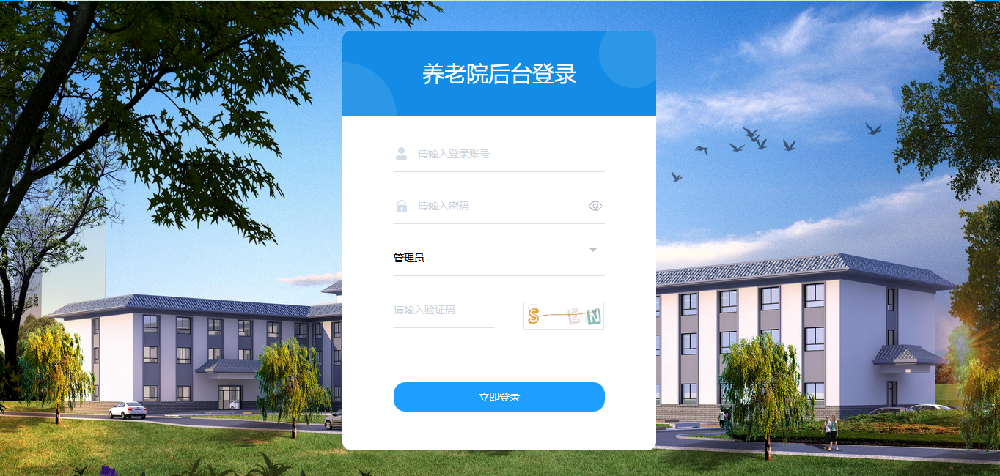
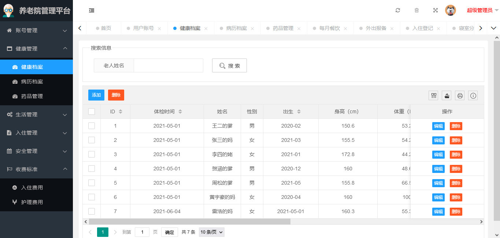
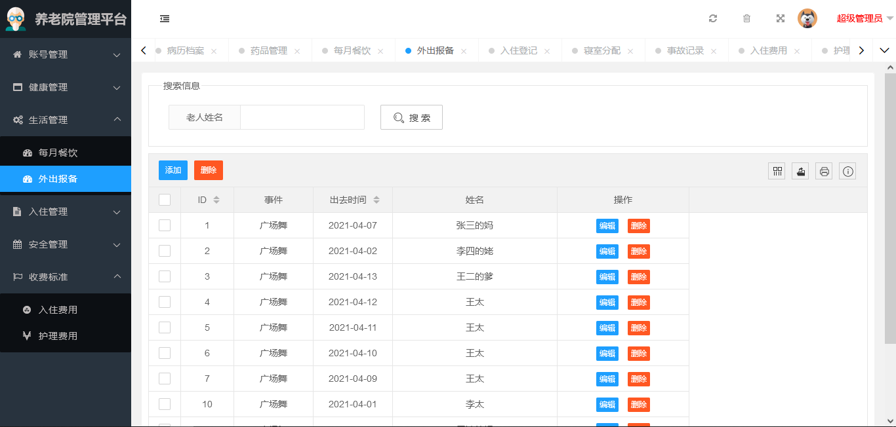
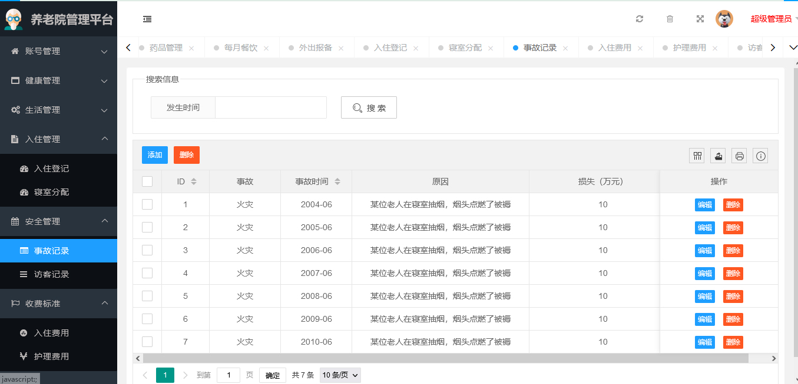
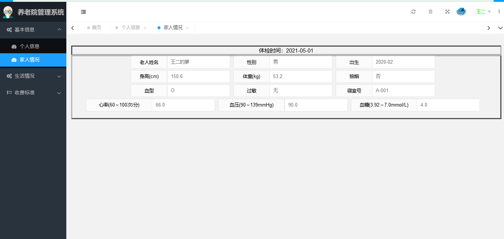

SpringBoot 养老院管理系统
一、项目介绍
163
养老院管理系统使用 SpringBoot+Mybatis 进行开发，系统分为管理员和用户两个角色。系统详细功能如下
管理员：
-
用户管理
-
健康档案
-
病例档案
-
药品管理
-
外出报备
-
入住登记
-
寝室分配
-
事故记录
-
访客记录
用户：
-
家人情况
-
个人信息
-
每月餐饮查看
-
外出报备查看
-
收费查看
二、技术框架
-
后端：SpringBoot，Mybatis
-
前端：layui，jquery
三、安装教程
-
用 idea 打开项目
-
在 idea 中配置 jdk 环境
-
配置 maven 环境并下载依赖
-
新建数据库，导入数据库文件
-
在 application-dev.yml 文件中将数据库账号密码改成自己本地的
-
启动运行，浏览器输入
http://localhost:8080
进行访问。管理员账号密码 admin/123456，用户账号密码 wanger/123456
四、项目截图




